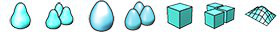
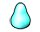
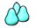
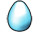
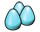
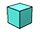
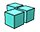
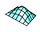
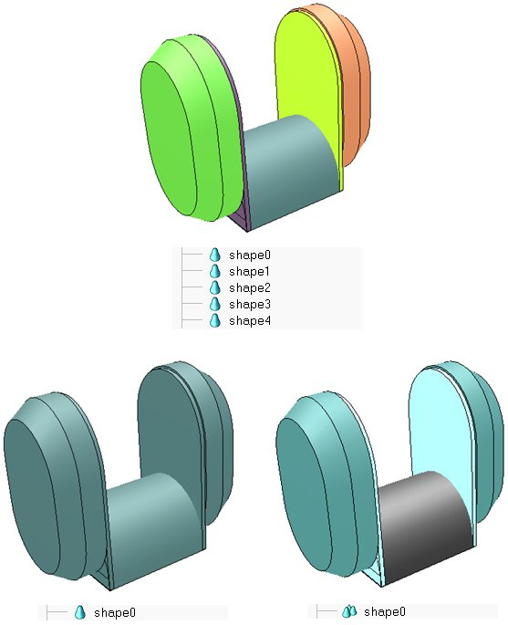

|
Shapes A shape is an instance of type shape, which derives from type sceneObject. A shape holds one or more instances of type mesh. A shape is a rigid collection of meshes that are composed of triangular faces. They can be imported/exported and edited. They come in four different sub-types:  Simple shape: it is not convex nor a primitive shape, and has one set of visual attributes. Not optimised nor recommended for dynamics collision response calculation (since very slow and unstable). Compound shape: it is a compound of simple shapes that can have several sets of visual attributes. Not optimised nor recommended for dynamics collision response calculation (since very slow and unstable). Convex shape: it is convex but not a primitive shape, and has one set of visual attributes. Optimized for dynamics collision response calculation (but primitive shapes are recommended). Compound convex shape: it is a compound of convex shapes that can have several sets of visual attributes. Optimized for dynamics collision response calculation (but primitive compound shapes are recommended). Primitive shape: it is a primitive shape (cuboid, cylinder, sphere, etc.), and has one set of visual attributes. It is best suited for dynamics collision response calculation, since it will perform very fast and is stable. See the dynamics section for more information. Primitive compound shape: it is a compound of primitive shapes that can have several sets of visual attributes. It is best suited for dynamics collision response calculation, since it will perform very fast and is stable. See the dynamics section for more information. Heightfield shape: it represents a terrain as a regular grid, where only the heights change. It has one set of visual attributes and can sometimes also be considered as primitive shapes: they are usually also optimized for dynamics collision response calculation.By default, all imported shapes are simple shapes. Two or more shapes or compound shapes can however be grouped/ungrouped with [Edit > Shape grouping/merging > group/ungroup]. Simple shapes can also be merged/divided with [Edit > Shape grouping/merging > merge/divide]. Refer also to the model tutorial. which illustrates how to correctly import and prepare shapes for a simulation model. See also scene:groupShapes, shape:ungroup, scene:mergeShapes and shape:divide Primitive shapes are mainly functional shapes. They are most of the time only used by the physics engine that performs on them much better and faster than on non-primitive shapes (e.g. random or convex meshes). For that reason, primitive shapes are often hidden in an invisible layer (e.g. layer 9). Refer to the layer selection dialog and the section on how to design dynamic simulations for more information. See also sceneObject.layer  [(a) 5 shapes (e.g. after import), (b) 1 shape (after merging), (c) 1 compound shape (composed of 5 simple shapes)] Primitive shapes can also be grouped, the resulting compound shape will however only be primitive if all of its composing elements are also primitives. Merging primitive shapes will result in a non-primitive shape. Shapes are collidable, measurable and detectable objects. This means that shapes: The collidable, measurable and detectable properties of a shape can be altered in the general scene object properties dialog. Additionally, those properties can be overridden if the shape is part of a model which overrides them. Refer to the model dialog for more information. Refer also to sceneObject.collidable, sceneObject.measurable and sceneObject.detectable. The shape calculations (i.e. collision, distance and proximity sensor calculations) available in CoppeliaSim are also available as stand-alone routines via the Coppelia geometric routines. See also sceneObject:checkCollision, collection:checkCollision, sceneObject:checkDistance, collection:checkDistance and proximitySensor:checkSensor. |